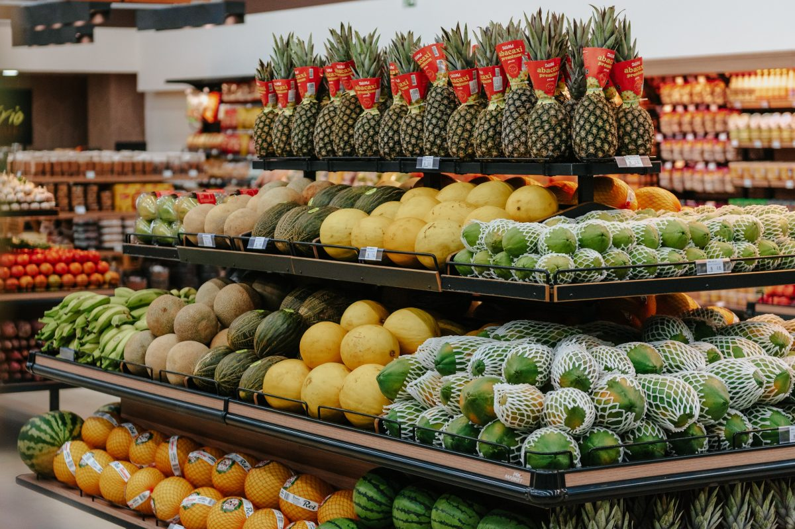

Seção de Frutas Frescas
Descrição: Variedade completa de frutas frescas selecionadas diariamente, incluindo abacaxi, melão, mamão, bananas e muito mais. Produtos de primeira qualidade direto do CEASA.
Preço: A partir de R$ 2,50/kg
Sua loja de confiança no bairro
Descrição: Variedade completa de frutas frescas selecionadas diariamente, incluindo abacaxi, melão, mamão, bananas e muito mais. Produtos de primeira qualidade direto do CEASA.
Preço: A partir de R$ 2,50/kg
Descrição: Verduras e legumes frescos colhidos diariamente, incluindo alface, tomate, cebola, cenoura, brócolis e uma grande variedade de produtos orgânicos e convencionais.
Preço: A partir de R$ 1,80/kg

Descrição: Cesta básica completa com arroz, feijão, açúcar, óleo, macarrão, farinha de trigo, sal, café e outros itens essenciais para sua despensa. Produtos de marcas reconhecidas.
Preço: R$ 89,90 (cesta completa)
Descrição: Kit com produtos alimentícios essenciais incluindo biscoitos, leite em pó, achocolatado, cereais matinais, conservas e molhos. Ideal para complementar sua despensa.
Preço: R$ 65,50 (kit completo)
Descrição: Ampla variedade de produtos de higiene pessoal incluindo shampoos, condicionadores, sabonetes, cremes dentais, desodorantes e produtos para cuidados com a pele.
Preço: A partir de R$ 3,90 (por unidade)

Descrição: Produtos de limpeza para toda a casa incluindo detergentes, desinfetantes, água sanitária, amaciantes, sabão em pó e produtos especializados para diferentes superfícies.
Preço: A partir de R$ 4,50 (por unidade)